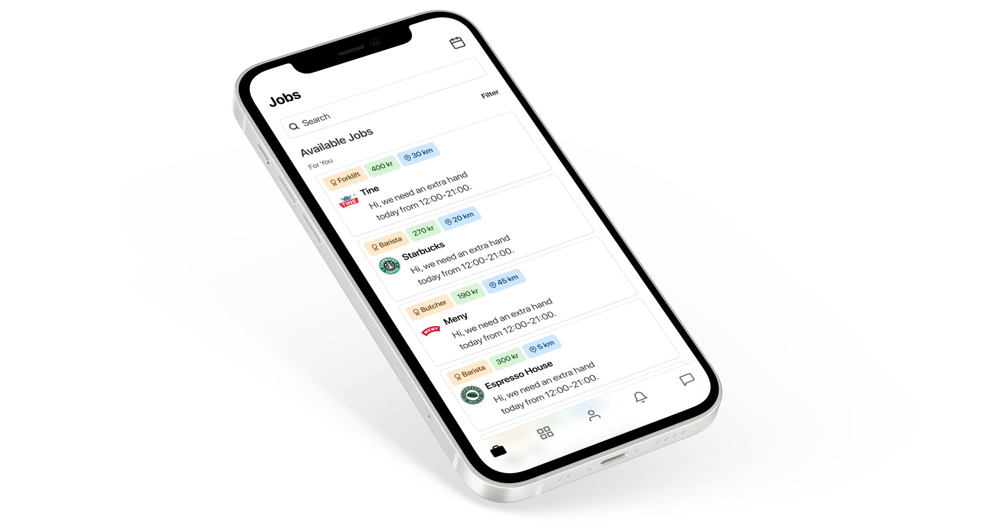

FLEX
CASE STUDY

10 Weeks September-November 2023
Intro
Flex is a recruitment app, connecting students and employers. Starting off we thought we were only creating an app for students in need of part-time work, but through research we quickly realised we are also creating another option for students stuck in part-time jobs that don't fit their changing schedule
Role: Product Designer, Project Manager and Researcher
Tools: Figma, Mockup, Miro, Figjam and Zoom
10 Weeks September-November 2023